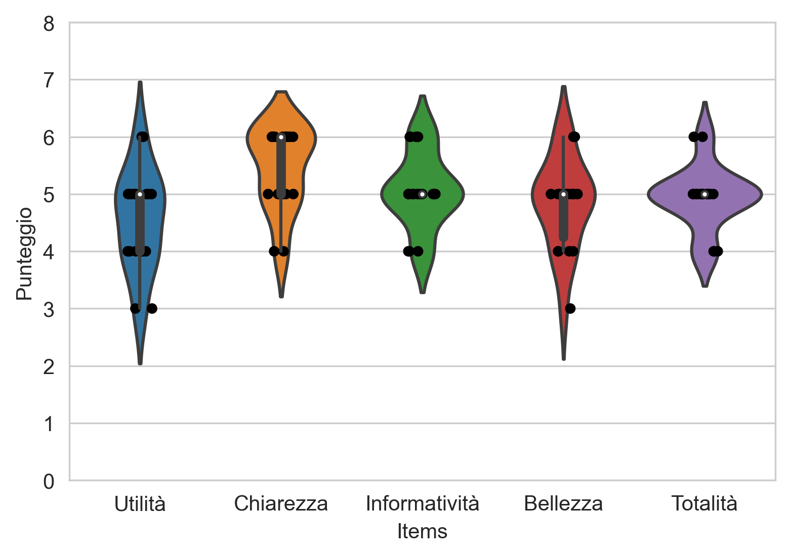
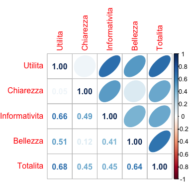
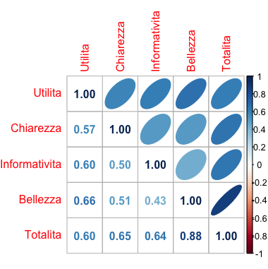
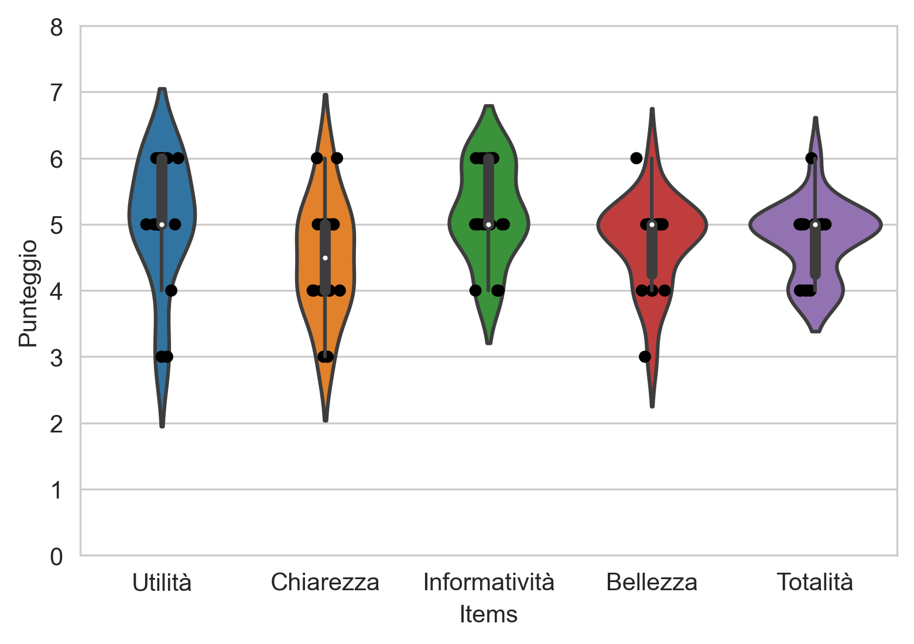
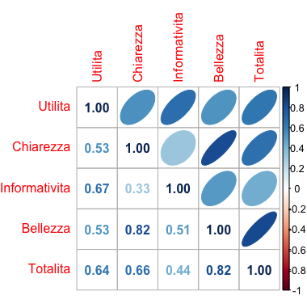

NOTE METODOLOGICHE
Si vuole descrivere la metodologia utilizzata per la creazione e l’analisi della struttura dati e per la realizzazione delle visualizzazioni. Innanzitutto, si è deciso di scaricare ed utilizzare i dati, relativi ai docenti per le scuole italiane per gli ordini scolastici dall’infanzia alla scuola secondaria di II grado, dal portale Dati-Istruzione. I dati utilizzati, oltre alla numerosità dei docenti differenziata per genere e per ruolo, presentano per ogni osservazione l’indicazione dell’anno scolastico e della provincia di riferimento. Successivamente questi dati sono stati integrati con le informazioni relative alla regione, alla zona e alla numerosità della popolazione per ciascuna provincia, utilizzando i dati presenti sul sito dell' ISTAT. L’integrazione dei dati è stata effettuata servendosi dei linguaggi Python e R e tramite l’utilizzo di Excel. Le visualizzazioni interattive, invece, sono state create con l’utilizzo del software Tableau, mentre la visualizzazione statica con il linguaggio R.
VALUTAZIONE QUALITA'
Tra le possibili valutazioni di qualità disponibili, abbiamo optato per l'impiego delle seguenti metodologie di Assessment aventi scopo formativo:
1) Valutazione Euristica;
2) Valutazione Utente - Test;
3) Questionario Psicometrico.
L'attuazione delle metodologie pocanzi citate ed i risultati ottenuti vengono descritti dettagliatamente nei seguenti paragrafi.
VALUTAZIONE EURISTICA
Per il compimento dell'assessment euristico, di tipo formativo, sono state interpellate 3 persone distinte. Seguendo la metodologia think-aloud,
sono state sfruttate le loro impressioni ad alta voce per operare miglioramenti nelle infografiche.
Il seguente elenco permette di sottolineare i commenti più significativi relativi alle visualizizzazioni d'interesse:
1) Cartogramma: Si riportano alcuni commenti relativi a difficoltà nel cogliere le differenze tra i due cartogrammi.
In particolare, non risulta chiara la differenza tra le scale di colore utilizzate, essendo intervalli diversi di valori ma con le stesse
gradazione di colore. Alcuni utenti riportano la mancanza del dato a livello nazionale, necessario per un confronto con la singola situazione regionale.
2) Scatterplot: Gli utenti notano ampi spazi vuoti dovuti alla dispersione dei dati.
Identificano i vari ordini di istruzione e chiedono se vi è un "tasso di docenza nazionale". Non tutti riescono a cogliere immediatamente l'interattività del grafico.
3) Lineplot e Coropletica: Per quanto riguarda la serie temporale, diversi sono i commenti che evincono scarsa chiarezza nei cambiamenti percentuali di precari. L'uso esclusivo della
variazione di grandezza delle linee non risulta sufficiente. Inoltre, risulterebbe interessante capire come varia il numero
di supplenti su tutto il territorio nazionale, in modo da comprendere quali delle zone italiane potrebbero influenzare maggiormente il dato nazionale.
Molto gradita, invece, la possibilità di interattività con il grafico.
Con riferimento alla mappa coropletica, vengono riportati diversi commenti che evidenziano come il colore utilizzato non sia rappresentativo delle percentuali perché dissimile
rispetto a quello usato per la serie storica. Inoltre, sarebbe gradita la possibilià di sapere con immediatezza quali sono le province che presentano i valori
di percentuale di precari minimi e massimi, in modo da evitare il controllo tramite il passaggio del mouse su ciascuna provincia per ogni anno in analisi.
Viene, infine, sottolineata l'importanza del tema e l'utilità dell'interattività all'interno di una visualizzazione di questo genere.
Modifiche apportate:
1) Cartogramma: Per migliorare la comprensione delle differenze tra le legende, vengono introdotti 3 diversi glifi per ciascun cartogramma. Questi
permettono di cogliere le differenze tra valori minimo, massimo e nazionale grazie sia alle diverse altezze che alle aree proporzionali. La modifica permette di comprendere
immediatamente le differenze di scala tra massimo e minimo nelle due situazioni, risultando molto più marcate utilizzando dati non standardizzati. Il dato nazionale per il primo
cartogramma indica il numero di docenti medio per regione e per questo ne viene riportata l'incertezza della stima; nel secondo cartogramma, invece, viene riportato
il tasso nazionale.
2) Scatterplot: Dopo le diagnostiche fatte presenti dagli utenti, si è scelto di visualizzare la bisettrice all'interno del grafico
al fine di poter tagliare l'asse riferito ai docenti maschili, sul quale i dati non si distribuiscono per ampi intervalli, per limitare gli spazi vuoti. È stato aggiunto per ogni ordine di scuola il tasso di docenza nazionale,
per il quale non è stato necessario calcolare una media ma effettuare una semplice aggregazione dei dati sommando le informazioni di tutte le
province a nostra disposizione. Per far cogliere subito l'interattività del grafico si è scelto di trasformare gli eventi informativi da
click-sensitive a mouse-sensitive e di aggiungere le distribuzioni dei docenti standardizzate per la popolazione provinciale di entrambi
i generi lungo gli assi dello scatterplot. Si sono, infine, confrontate anche diverse versioni di scatterplot, integrando all'assessment euristico anche un processo di assessment comparativo.
3) Lineplot e Coropletica: A seguito dei commenti riportati dagli utenti, si è deciso di amplificare i cambiamenti di percentuale dei precari rispetto ai docenti,
introducendo un uso del colore che si satura all'aumentare dei supplenti, e di aggiungere agli estremi delle linee i dati relativi alle percentuali. In
questo modo risulta migliorata l'interpretabilità visiva delle linee e si fornice un'indicazione immediata delle differenze nei 5 anni considerati in analisi. Successivamente
è stata aggiunta la serie temporale relativa all'Italia nella sua completezza, calcolata a partire dai dati sulle province, per evidenziare le zone che contribuiscono
maggiormente alla totalità dei docenti in Italia.
Per quanto riguarda la mappa coropletica, si è deciso di utilizzare lo stesso colore e relativa lightness della serie temporale al fine di identificare la percentuale di precariato
nelle diverse province; in questo modo si ottiene una legenda unica e informativa dei valori. Infine, sono state aggiunte, per ogni anno, le etichette relative alle province
che presentano i valori percentuali di precariato massimi e minimi direttamente sulla mappa, in modo da coglierli immediatamente senza passaggio del cursore.
VALUTAZIONE UTENTE - TEST
Sono stati individuati 6 distinti task per effettuare la valutazione utente e sono stati sottoposti a 9 utenti. I dati sono stati raccolti su un file excel reperibile al seguente
link. Si è chiesto agli utenti, così come suggerito da
Nielsen, di prendere familiarità con le visualizzazioni e, solo successivamente, di rispondere ai task, anche in questo caso seguendo il protocollo think-aloud.
Prima Infografica: Cartogramma - Distribution GAP
Si riportano i task sottoposti agli utenti le relative risposte soluzioni:
• Task 1: Identifica le due regioni che presentano il tasso di docenti standardizzato più elevato. Risposta: Calabria e Basilicata.
• Task 2: Identifica il numero di docenti presenti nella regione Valle d'Aosta.
Risposta: Dato non disponibile.
Dal grafico ottenuto è possibile osservare come gli esiti siano tutti successi e si deduce come il cartogramma, pur non essendo interattivo, sia in questo caso un grafico
adatto alla comprensione e semplice da leggere.
Seconda Infografica: Scatterplot - Gender GAP
Si riportano i task sottoposti agli utenti le relative risposte soluzioni:
• Task 1: Identifica per ogni ordine di scuola la provincia che riporta il tasso di docenza femminile inferiore.
Risposta: Padova (infanzia), Trieste (primaria), Bologna (secondaria I grado), Como (secondaria II grado).
• Task 2: Identifica, in una sola volta, la posizione nei 4 ordini di istruzione della provincia di Roma e trova per quale ordine scolastico la provincia scelta ha il minor GAP di genere in percentuale.
Risposta: Scuola secondaria di II grado.
Si può osservare che gli insuccessi siano maggiori per il secondo task rispetto al primo e che siano distribuiti su un arco di
tempo maggiore, fino a toccare quasi i 125 secondi. La distribuzione degli esiti nel primo task, invece, risulta più incentrata su valori intorno
ai 25 secondi con prevalenza di successi, indice di comprensibilità del grafico e dei task richiesti.
Terza Infografica: Lineplot e Coropletica - Precarious GAP
Si riportano i task sottoposti agli utenti le relative risposte soluzioni:
• Task 1: Identifica la zona dell'Italia che presenta un incremento percentuale di precari minore dal 2016 al 2020.
Risposta: Meridione.
• Task 2: Identifica per la provincia di Benevento se il valore % di precari è maggiore, minore o uguale al valore % di precari della zona a cui appartiene la provincia per l'anno 2018.
Risposta: Inferiore.
Dalla visualizzazione emerge come il secondo task sia più impegnativo del primo, in quanto il tempo impiegato dagli utenti risulta essere mediamente maggiore di cirva 20 secondi; si evidenzia, però, che il violin plot che riporta un tasso di errore maggiore risulti quello relativo al primo task.
QUESTIONARIO PSICOMETRICO - LOCORO CABITZA
Per concludere la fase di assessment, si è scelto di sottoporre il questionario Locoro-Cabitza a 18 utenti e di condurre in seguito un'analisi degli items. Di seguito vengono mostrati i violin plot e le matrici di correlazione inerenti alle risposte registrate sui vari items del questionario. Le risposte degli utenti sono reperibili al seguente link.
Prima Infografica: Cartogramma - Distribution GAP
|  |  |
La prima infografica risulta essere la più chiara, presentando per l'ambito della chiarezza valori sempre pari o superiori a 4 e una mediana pari a 6.
Seconda Infografica: Scatterplot - Gender GAP
 |
 |
La seconda infografica presenta valori molto elevati per l'ambito dell'informatività, risultando però meno bella della precedente, osservando un valore pari a 2 in questo ambito.
Terza Infografica: Lineplot e Coropletica - Precarious GAP
|  |  |
Per la terza infografica si osservano valori simili alla precedente, con valori però sempre superiori o uguali a 3 anche per gli ambiti della bellezza e della chiarezza.
Si è, infine, scelto di calcolare l'α di Cronbach per ogni visualizazione legata al questionario Locoro-Cabitza. Nel grafico sottostante viene riportato il confronto degli indici alpha con i relativi intervalli di confidenza.
L’α di Cronbach è un metodo statistico per misurare la coerenza interna di un questionario composto da items. Misurare la coerenza interna di un questionario significa determinare se le risposte fornite ai vari items sono tra loro consistenti, e, quindi, attendibili.
Nel grafico sottostante vengono riportati i valori calcolati su ciascuna visualizzazione con i relativi intervalli di confidenza:
1) Cartogramma: α = 0.79 , lower-IC = 0.6, upper-IC = 0.98;
2) Scatteplot: α = 0.87 , lower-IC = 0.76, upper-IC = 0.98;
3) Lineplot-Coropletica: α = 0.87 , lower-IC = 0.75, upper-IC = 0.99;
Stando alle stime puntuali ed agli intervalli di confidenza calcolati per i rispettivi indici α di Cronbach, si evince come il questionario
Locoro-Cabitza sottolinei un'ottima corenza interna (tutti gli alpha sono superiori allo 0.75 ed inferiori allo 0.9), sintomo di concordanza
degli items con la direzionalità del questionario e di attendibilità e riproducibilità nel tempo dei dati raccolti.